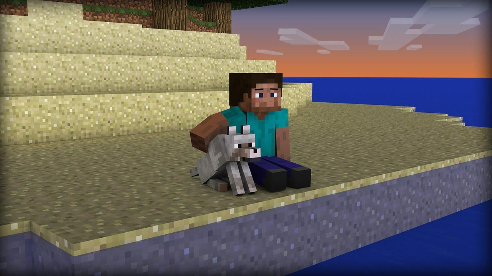

"CHAPTER 2:"
"EXPLORATION OF THE WORLD"
he was wolking for 2 hours that in the game passes like 15 minutes or less,
he get a lot of wood and he build his first house, he kill three sheeps🥲 for a bed but he can't craft it so he sleep in the floor
and he stay there for 2 mincraft minute so he can sleep a bit, but when he stand up
he notise that it still morning, that means that he sleep all the day and the night,
he was happy because now he stay better, so he exit from the house and he find a dog,
he tried to addomesticate him but he need a bone and he dont have it, then he find one from a skeleton
and he addomesticate it, then he bring it in the house and he give him food, they sleep in the floor, and the next day they will
decorate the house....go to chapter 3
